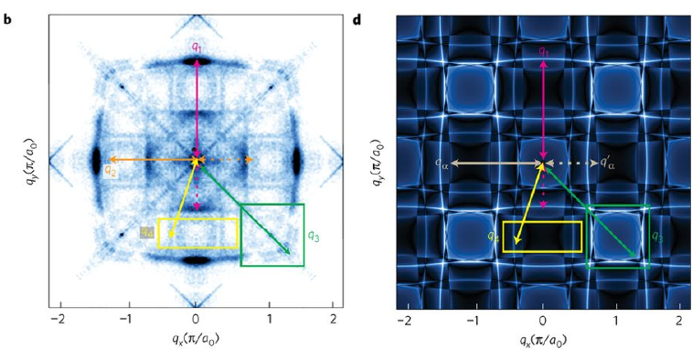
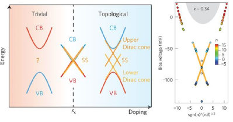
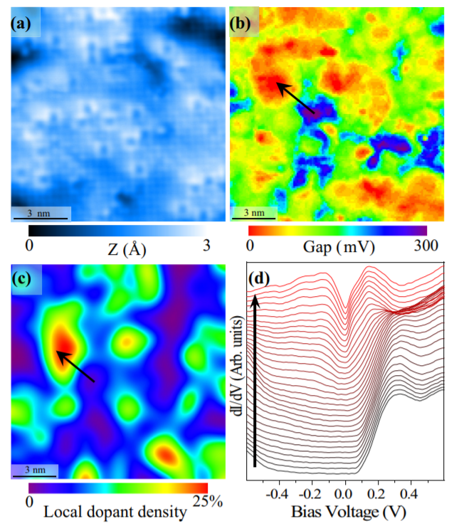
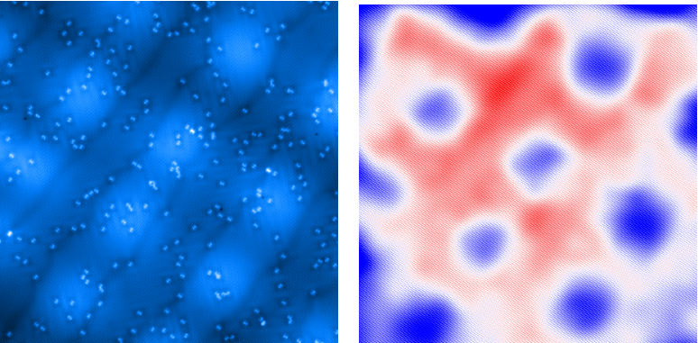
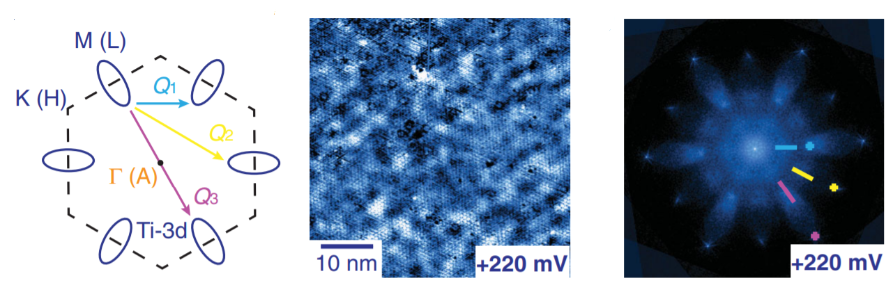

Research Topics
Our work spans unconventional superconductivity, topological materials, strongly correlated systems, and other topics at the forefront of condensed matter research.

Topic 01
Unconventional Superconductors
In 1957, University of Illinois Professors John Bardeen and Leon Cooper, along with graduate student Robert Schreiffer, published a groundbreaking work on the theory of superconductivity. Known as BCS theory, it provided the first microscopic explanation for superconductivity since its discovery by Onnes in 1911.
It was extremely successful until the inception of high temperature superconductors in the late 80s. These superconductors defied explanation by BCS theory and today join a class of materials known as unconventional superconductors. Unconventional superconductors host several competing emergent phenomena and are one of the most pressing research areas for their fundamental physics and potential applications.

Topic 02
Topological Materials
A relatively new class of materials, topological materials are described by the shape, or topology, of their electronic states in momentum space. A material that is topologically non-trivial will have an electronic "shape" that is mathematically distinct from a normal material.
A property of topological materials is that they will have unique, protected states at interfaces with materials of trivial topology. These topological states have fascinating features, such as sometimes behaving as if they have no mass, being impervious to backscattering, and being spin-momentum locked. By studying topological materials, we hope to gain fundamental understanding of topology's role in materials which will be critical for harnessing topological states in novel devices.

Topic 03
Strongly Correlated Electrons
In a lot of materials, the properties can be adequately described without considering the role of electron-electron interactions and instead absorbing these effects into renormalized quantities like the effective mass. However in some of the most interesting materials, known as strongly correlated electron systems, these electron-electron interactions cannot be swept under the rug.
In fact, these interactions are responsible for entirely new states of matter like Mott Insulators, Wigner Crystals, and Heavy Fermions. Strongly correlated electron systems are of particular importance for the role they play in high temperature superconductors. Since strongly correlated materials are known for their very local properties, STM is uniquely suited to study these systems and provide invaluable insights.

Topic 04
Thin Film Growth and Manipulation
Using the two MBE growth chambers in our lab, we are focused on the growth and control of thin films. Thin films are 2D materials whose thickness can be controlled down to one atomic layer. They often have unique physical properties associated with their reduced dimensionality, including increased superconducting transition temperatures and distinct charge density wave patterns.
Thin films also have relatively low total carrier concentrations, making them amenable to gating. Gating allows for the carrier concentration to be continuously tuned in-situ, as opposed to changing the concentration ex situ with substitution or intercalation. Our goal is to gate thin films to understand the effects of the Fermi level's location on the physics of a material.

Topic 05
Transition Metal Dichalcogenides
Often called the "lego blocks" of material science research, transition metal dichalcogenides (TMDCs) are layered materials consisting of one transition metal (such as W or Ti) for every two chalcogen atoms (such as Se or Te). These materials are especially suitable for STM research as the van der Waals bonding in the stacking direction leads to easy cleaving and the layered structure often leads to quasi-2D properties.
The weak stacking allows for easy material intercalation in-between layers, often dramatically changing the physical properties. A vast array of phenomena have been observed in TMDCs, including superconductivity, charge density waves, and Mott Insulators to name a few.
Research Funding
Our research is generously supported by the National Science Foundation, the Gordon and Betty Moore Foundation, and the Department of Energy.